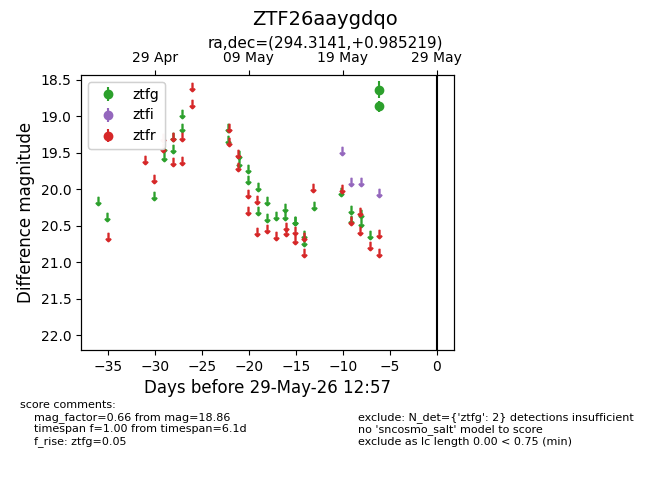
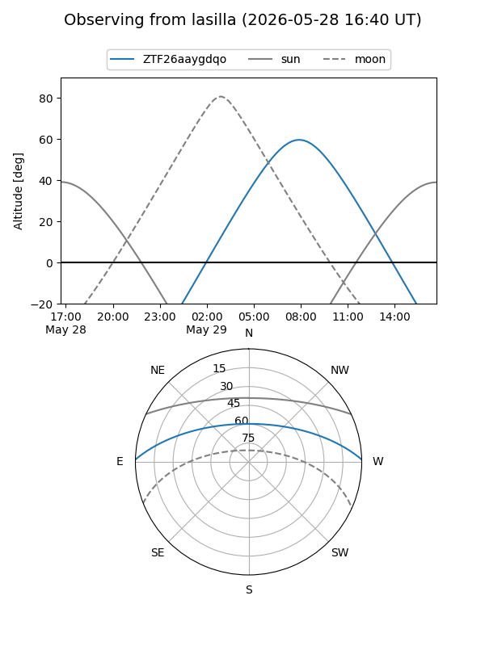
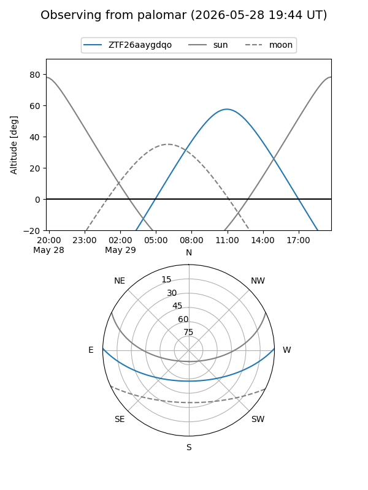

ZTF26aaygdqo
Target ZTF26aaygdqo at 2026-05-29 12:59
Aliases and brokers:
lsst-FINK: link
lsst-Lasair: link
lsst-ALeRCE: link
ztf-FINK: link
ztf-Lasair: link
ztf-ALeRCE: link
alt names
ZTF26aaygdqo (ztf,fink_ztf)
Coordinates:
equatorial (ra, dec) = 294.3141,+0.98522
equatorial (HMS+DMS) = 19:37:15.39,+00:59:06.79
galactic (l, b) = (39.0966,-9.72261)
Flags:
Photometry:
last ztfg=18.86
2 ztfg detections
Lightcurve

Visibility


Additional plots